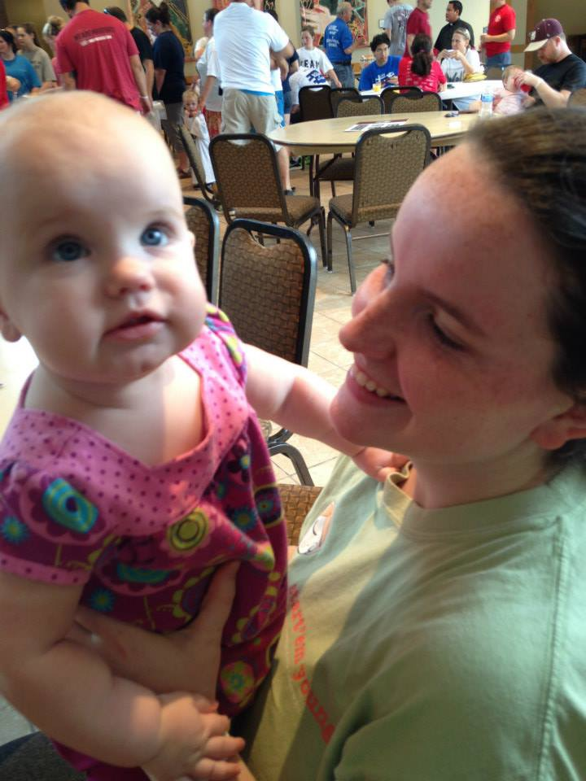
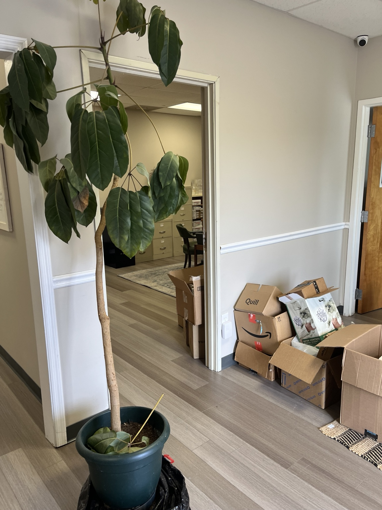
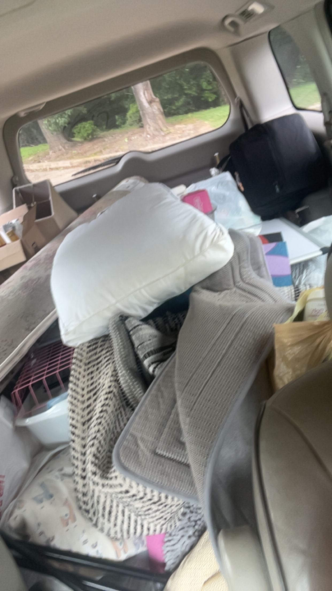
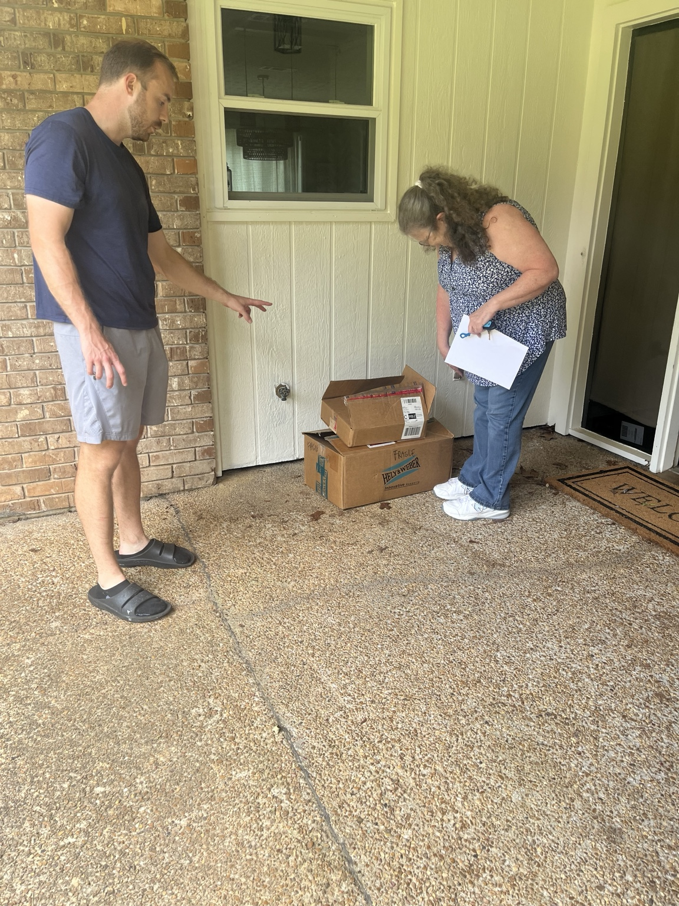

First, there was a room with supplies shoved inside. Then people started showing up.
The Porchlight story begins in the messy, beautiful middle: boxes on porches, donors handing over what they had, volunteers loading cars, school deliveries, and rooms slowly becoming useful again.
Enter the PorchlightPractical help, placed directly into the hands that need it.
Our programs are designed to meet people where they are and build repeatable systems of care across Mississippi.

Wellness BasketsRoot Bound, Bloom Bound, Covered + Open Table.

Community ClosetClothing and essentials.

RootedPrepared with dignity.
 The Porchlight Commons
The Porchlight CommonsServing Mississippians since '26.

Homeless OutreachSupplies and compassion.
The Wildflower ProjectSchool outreach across Mississippi.
Support. Restore. Empower.
Built by Mississippi. For Mississippi. Rooted in faith. Moving in love.
See Me Now
In 2021, a live ultrasound tour began at the Mississippi State Capitol in Jackson and traveled toward Washington, D.C. ahead of the Dobbs hearing. Jameson was part of that beginning. His story continues as a reminder that life does not end at the headline.
Follow the JourneyPick your lane. We’ll put it to work.
Give Funds
Support daily outreach, supplies, facility needs, fuel, storage, printing, and program growth.
DonateGive Items
Baby supplies, hygiene products, food, clothing, household goods, backpacks, and school support items.
See NeedsGive Time
Volunteer for sorting, delivery, phone calls, events, resource navigation, professional services, and community outreach.
VolunteerThe sound of life in the room.
Not every story has to be heavy. Some moments simply remind us why the work matters: laughter, play, belonging, and families feeling seen.